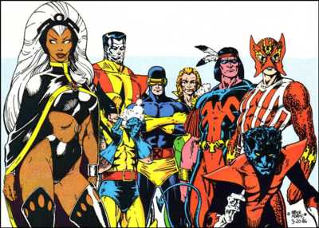

| RAKU |
The ROCK and roller was so wasted he fell down three times. On the way to the stage . |
|
Each flower petal falls onto the water. |
| ( を ) お＊とす |
I drop something.
★★★★☆ |
| ( が ) お＊ちる |
something falls (fall off your chair, a plate falls and breaks)
★★★★★ |
| 落ち着く |
keep your cool.
★★★☆☆
to keep your cool. Often said as a command： おちつけ!! |
| 堕落 してる |
corrupt
★★★☆☆
corrupt in one's personal life - not usually political corruption. Drugs, lies, trife behavior. |
| 部落民 |
burakumin
★★☆☆☆
CCWFRABU
(literally,'the fallen group.') this is - along with Ainu, Korean ex-slaves, the Eta-hin,and the handicapped, one of the main groups discriminated against in Japan. I won't go into the whole story here, but most Japanese will say, 'Don't say 部落民, it's 差別 (さべつ＝ discriminatory)' What they neglect to tell you is, there is no polite word! Effectively denying someone a voice in the guise of being polite to them is a very. Very. VERY Japanese way of fucking with people. However, you can say 同和 (どうわ = social integration) instead: speaking of the phenomenon instead of the individuals. For instance, discrimination against people is 同和の問題 ('the social integration problem'). A nice article explaining the importance of using the right language is here and a more general overview of discrimination is here. |
| 落第 する |
fail a test
★★☆☆☆
fail an exam,or get held back a grade. |
| Meaning | Hint | Radical | |
|---|---|---|---|
| 落 | fall,drop | FLOWERS | 花 |
| 夜 | late night | BERET |  |
FLOWERS fall on me when I wear my BERET at night .
|
corruption, bribery
堕落 汚職 賄賂 横領 使い込む |
|
depression
憂鬱 落ち込む 気分がしずむ きが滅入る 陰気 ふてくされる うかない |
|
downfall
没落 滅亡 崩壊 破壊 絶滅 |
|
fall
落ちる 墜ちる |
|
lose
負ける 参った 敗北 失敗 失う 不合格 落第 |
 KANJIDAMAGE
KANJIDAMAGE